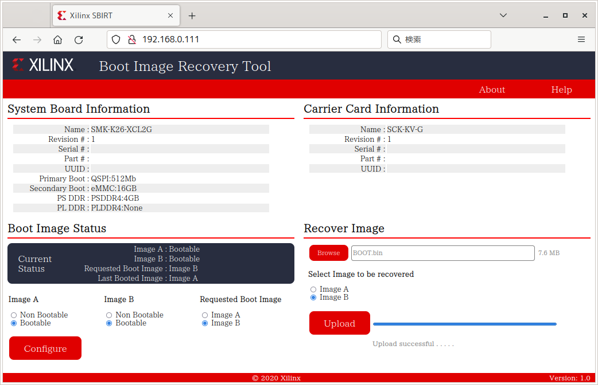

In the event that the Kria KV260 or KR260 fails to rewrite the firmware and Linux will no longer boot, the board's built-in Boot Image Recovery Tool function can be used to write the firmware from a PC and recover it.
It is also possible to create a boot image of your own application and immediately boot the board by itself.
First, obtain the latest version of the firmware for the board and Linux from AMD's support site.
Set up a LAN environment of 192.168.0.0/24 and connect your PC and KV260 to the LAN.
Turn on the power while holding down the "FWUEN" button on the board or press Reset to launch the Boot Image Recovery Tool web interface.
Open http://192.168.0.111/ in your PC's web browser and you will see the following screen. (https is not supported)
"Boot Image Status" shows the current status of the Boot Image (firmware). There are two areas that can be written to, A and B. The image of the one set to "Non Bootable" will not be used. If both are set to Bootable, the one selected under "Requested Boot Image" will be used. If there is still a valid Boot Image on either A or B, this setting is sufficient for recovery.
Under "Recover Image," you can "Browse" to select a Boot Image on your PC and "Upload" it to either the A or B area.
This can be not only firmware downloaded from AMD's support site, but also your own Boot Image (e.g. standalone application) created with Vitis. If you write a standalone application and set it as the priority boot, it is possible to immediately start the original application on the board itself.
For example, you can write normal Linux boot firmware to A and your original application to B, and use this tool to switch between the two.
The Boot Image Recovery Tool itself is written in a different area on the flash memory from the A/B Boot Image, so even if an invalid Boot Image is written to both A and B, recovery is usually possible. (This is not guaranteed, so try at your own risk.)
{kind=link}